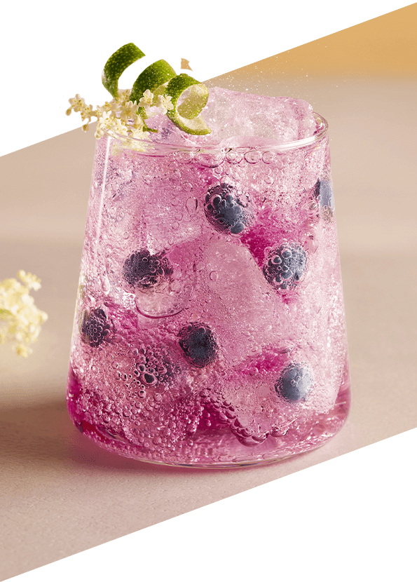
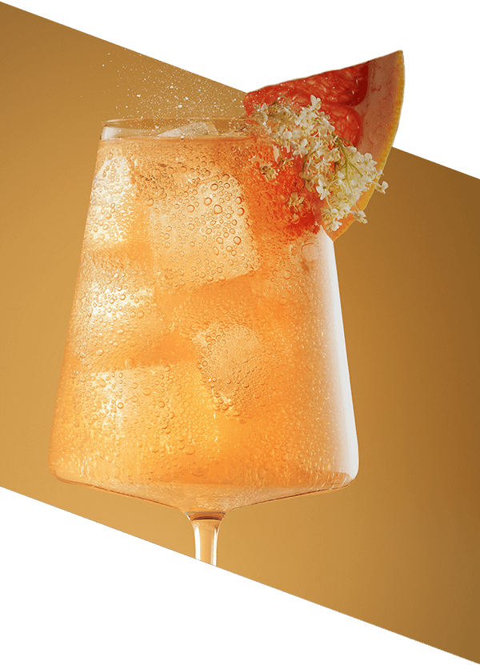
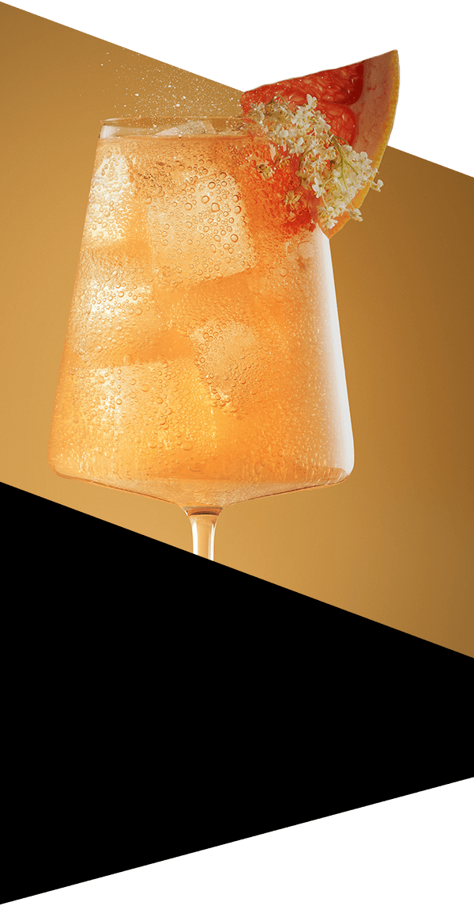

Daj się ponieść magii smaku z limitowanym zestawem SodaStream Crafted Grejpfrut & Kwiat Czarnego Bzu. Znajdziesz w nim nie tylko syrop smakowy, lecz również limitowaną butelkę inspirowaną niebanalną kompozycją grejpfruta i czarnego bzu.
Pomarańczowo-żółta kolorystyka i owocowo-kwiatowa grafika idealnie korespondują ze smakiem syropu. To zestaw dla wszystkich, którzy cenią designerskie dodatki i chcą dodać codzienności jeszcze więcej koloru.
Syrop SodaStream
Crafted Grejpfrut &
Kwiat Czarnego
Bzu 330 ml:
Autorska baza
do koktajli i moktajli,
z którą przygotujesz wyjątkowe napoje.
Butelka SodaStream
Fuse 1 l:
Zaprojektowana
jako dopełnienie
syropu, design
nawiązuje stylistycznie
do czarującego duetu grejpfruta i czarnego bzu.
Oryginalny smak, w którym się zakochasz
Masz ochotę na niebanalną harmonię smaków,
których połączenie zaskoczy Ciebie i Twoich bliskich? Skosztuj wyjątkowego
syropu SodaStream Crafted
Grejpfrut & Kwiat Czarnego Bzu! Ta wyrafinowana
kompozycja smaków soczystego
grejpfruta
i romantycznych kwiatów czarnego bzu oczaruje
Twoich gości i zaprosi Was do celebracji mikromomentów.
Stylowa butelka, z którą podkręcisz doznania
Chcesz, by Twoje codzienne rytuały zyskały wyjątkową oprawę? Stylowa butelka Fuse o
pojemności 1 l
to dodatek, który podkreśli smak Twoich ulubionych
napojów. Jej unikalny design
nawiązuje
do
kompozycji
syropu, dopełniając jego walory smakowe kolorową grafiką. To praktyczny
gadżet, który
wprowadzi
do Twojej kuchni odrobinę świeżości!
W zestawie SodaStream Crafted Grejpfrut & Kwiat Czarnego Bzu z limitowanej edycji Crafted znajdziesz butelkę, która łączy nowoczesny design i funkcjonalność. Jest wielorazowa, trwała i praktyczna – by zapewnić Ci komfort podczas codziennego użytkowania, a unikalna stylistyka butelki doda charakteru Twoim napojom!
Designerska butelka Fuse to Twój sposób na…
Eko nawyki:
Zamień jednorazowe butelki na wielorazowe rozwiązanie z odpornego Tritanu, wolnego od BPA.
Komfort na co dzień:
Wygodnie umyj swoją butelkę
w zmywarce bez obaw o uszkodzenia czy zarysowania.
Świeżość bąbelków:
Ciesz się ulubioną intensywnością nagazowania dzięki hermetycznemu zamknięciu.
Łatwość użytkowania:
Butelka jest kompatybilna
z saturatorami SodaStream Terra, Art, Duo, Ensõ,
Spirit i Source.
Lubisz nietuzinkowe smaki? Z zestawem SodaStream Crafted Grejpfrut & Kwiat Czarnego Bzu
błyskawicznie
wykreujesz
wyjątkowy napój, który doda charakteru Twojej codzienności. Unikalna kompozycja wyrazistego
grejpfruta i
subtelnych
kwiatów czarnego bzu stanie się perfekcyjnym
tłem dla każdej chwili - zarówno relaksu spędzonego w błogiej samotności, jak i uroczystej
kolacji
z bliskimi.
Z pysznym napojem każdy moment smakuje jeszcze lepiej…
Przerwa w pracy:
Lemoniada 2.0 orzeźwi i doda Ci energii do dalszych wyzwań.
Romantyczna randka:
Finezyjny napój podkreśli piękno relacji i zachęci do głębokich rozmów.
Czas z bliskimi:
Kreatywny koktajl zaskoczy gości np. w trakcie imprezy czy rodzinnego spotkania.
Relaks w samotności:
Domowy moktajl pomoże odpocząć w spokoju np. z książką
lub maseczką na twarzy.
SodaStream Crafted doda każdej chwili odrobinę fantazji!
Bąbelkuj niczym najlepszy barman świata
Kreuj bąbelkowe napoje, które podbiją serca i podniebienia nawet najbardziej wymagających miłośników smaku!
gazuj Dodaj do wody bąbelki przy pomocy ekspresu do gazowania.
miksuj Uzupełnij wodę gazowaną syropem Grejpfrut & Kwiat Czarnego Bzu i ulubionymi dodatkami.
smakuj
Zakochaj się w niebanalnym
połączeniu smaków i ciesz się
pysznym orzeźwieniem.
Day
Wyjątkowe moktajle w ciągu dnia:
Zakochaj się w kwiatowo-owocowym moktajlu z orzeźwiającymi,
cytrusowymi nutami.
Night
 
Fantazyjne koktajle
wieczorem:
Przygotuj niebanalne drinki inspirowane grejpfrutem, uzupełniając napój o lód, ulubione dodatki i opcjonalnie alkohol.
Jedna SodaStream – wiele możliwości
Masz ochotę na jeszcze więcej smaku, fantazji i radości z życia? Poznaj całą gamę syropów smakowych
SodaStream!
Przygotujesz z nimi wyjątkowe napoje – dopasowane do Twojego charakteru i nastroju.
Eksperymentuj we własnej kuchni z takimi smakami jak Pepsi, 7 UP czy Mirinda. Zakochaj się
w owocowych propozycjach - klasycznej Lemoniadzie, egzotycznej Marakui i wyjątkowych Owocach
Leśnych. Odkrywaj
różnorodne smaki!
Eksploruj, komponuj
i delektuj się bąbelkami bez ograniczeń!